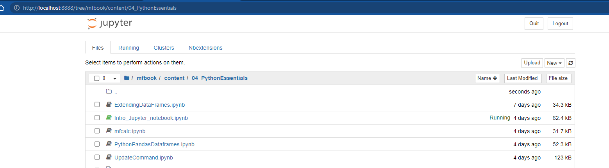

Introduction to Jupyter Notebook
Contents
1. Introduction to Jupyter Notebook¶
Jupyter Notebook is a web application for creating, annotating, simulating and working with computational documents. Originally developed for python, the latest versions of EViews also support Jupyter Notebooks. Jupyter Notebook offers a simple, streamlined, document-centric experience and can be a great environment for documenting the work you are doing, and trying alternative methods of achieving desirable results. Many of the methods in modelflow have been developed to work well with Jupyter Notebook. Indeed this documentation was written as a series of Jupyter Notebooks bound together with Jupyter Book.
Jupyter Notebook is not the only way to work with modelflow or Python. As users become more advanced they are likely to migrate to a more program-centric IDE (Interactive Development Environment) like Spyder or Microsoft Visual Code.
However, to start Jupyter Notebooks are a great way to learn, follow work done by others and tweak them to fit your own needs.
There are many fine tutorials on Jupyter Notebook on the web, and The official Jupyter site is a good starting point. The following aims to provide enough information to get a user started. Another good reference is here.
1.1. Starting Jupyter Notebook¶
Each time, a user wants to work with modelflow, they will need to activate the modelflow environment by
Opening the Anaconda command prompt window
Activate the ModelFlow environment we just created by executing the following command
conda activate modelflow
From here, any number of mechanisms can be used to interact with modelflow and World Bank models.
To use Jupyter Notebook the Jupyter notebook, must be first started. Following steps 1-2 above, a user would need to execute from the conda command line:
jupyter notebook
This will launch the Jupyter environment in your default web browser, which should look something like this:

where the directory structure presented is that of the directory from the jupyter notebook command was executed.
Warning
Note the directory from which you execute the jupyter notebook mfbook in the example above will be the root directory for the jupyter session, and only directories and files below this root directory will be accessible by jupyter.
1.2. Creating a notebook¶
The idea behind jupyter notebook was to create an interactive version of the notebooks that scientists use(d) to:
record what they have done
perhaps explain why
document how data was generated, and
record the results of their experiments
The motivation for these notebooks and Jupyter notebook is to record the precise steps taken to produce a set of results, which if followed by others would allow the to generate the same results.
To create a notebook you must select from the Jupyter Notebook menu
File-> New Notebook
{kind=link}
This will generate a blank unnamed notebook with one empty cell, that looks something like this:

{kind=link}
Warning
Each notebook has associated with it a “Kernel”, which is an instance of the computing environment in which code will be executed. For Jupyter Notebooks that work with modelflow this will be a Python Kernel. If your computer has more than one “kernel’s” installed on it, you may be prompted when creating a new notebook for the kernel with which to associate it. Typically this should be the Python Kernel under which your modelflow was built – currently python 3.9 in April 2023.
1.3. Jupter Notebook cells¶
A Jupyter Notebook is comprised of a series of cells.
Jupyter Notebook cells can contain:
computer code (typically python code, but as noted other kernels – like Eviews – can be used with jupyter).
markdown text: plain text that can include special characters that make some text appear as bold, or indicate the text is a header, or instruct Jupyter Notebook to render the text as a mathematical formula. All of the text in this document was entered using Jupyter Notebook’s markdown language
Results (in the form of tables or graphs) from the execution of computer code specified in a code cell
Every cell has two modes:
Edit mode – indicated by a green vertical bar. In edit mode the user can change the code, or the markdown.
Select/Copy mode – indicated by a blue vertical bar. This will be teh state of the cell when its content has been executed. For markdown cells this means that the text and special characters have been rendered into formatted text. For code cells, this means the code has been executed and its output (if any) displayed in an output cell.
Users can switch between Edit and Select/Copy Mode by hitting Enter
This entire book was generated using markdown cells, code cells and output cells from Jupyter Notebooks.
Note
Jupyter Notebooks were designed to facilitate replicability: the idea that a scientific analysis should contain - in addition to the final output (text, graphs, tables) - all the computational steps needed to get from raw input data to the results.
1.3.1. How to add, delete and move cells¶
The newly created Jupyter Notebook will have a code cell by default. Cells can be added, deleted and moved either via mouse using the toolbar or by keyboard shortcut.
Using the Toolbar
+ button: add a cell below the current cell
scissors: cut current cell (can be undone from “Edit” tab)
clipboard: paste a previously cut cell to the current location
up- and down arrows: move cells (cell must be in Select/Copy mode – vertical side bar must be blue)
hold shift + click cells in left margin: select multiple cells (vertical bar must be blue)
Using keyboard short cuts
esc + a: add a cell above the current cell
esc + b: add a cell below the current cell
esc + d+d: delete the current cell
1.3.2. Change the type of a cell¶
You can also change the type of a cell. New cells are by default “code” cells.
Using the Toolbar
Select the desired type from the drop down. options include
Markdown
Code
Raw NBConvert
Heading
Using keyboard short cuts
esc + m: make the current cell a markdown cell
esc + y: make the current cell a code cell
Auto-complete and context-sensitive help
When editing a code cell, you can use these short-cuts to autocomplete and or call up documentation for a command.
tab: autocomplete and method selection
double tab: documention (double tab for full doc)
1.4. Execution of cells¶
Every cell in a Jupyter Notebook can be executed, either by using the Run button on the Jupyter Notebook menu, or by using one of two keyboard shortcuts:
ctrl + Enter: Executes the code in the cell or formats the markdown of a cell. The current cell retains the focus – cursor stays on cell executed.
shift + enter: Executes the code in the cell or formats the markdown of a cell. Focus (cursor) jumps to the next cell
For other useful shortcuts see “Help” => “Keyboard Shortcuts” or simply press keyboard icon in the toolbar.
1.4.1. Executing python code¶
Below is a code with some standard python that declares a variable “x”, assigns it the value 10, declares a second variable “y” and assigns it the value 45. The final line of y alone, instructs python to display the value of the variable y. The results of the operation appear in Jupyter Notebook as an output cell Out[#]. By pressing Ctrl-Enter the code will be executed and the output displayed below.
x = 10
y = 45
y
45
The semi-colon “;” suppresses output in Jupyter Notebook
In the example below, a semi-colon “;” has been appended to the final line. This suppresses the display of the value contained by y; As a result there is no output cell.
x = 10
y = 45
y;
Another way to display results is to use the print function.
x = 10
print(x)
10
Variables in a Jupyter Notebook session are persistent, as a result in the subsequent cell, we can declare a variable ‘z’ equal to 2*y and it will have the value 90.
z=y*2
z
90
1.5. Markdown cells and the markdown scripting language in Jupyter Notebook¶
Text cells in a notebook can be made more interesting by using markdown.
Cells designated as markdown cells when executed are rendered in a rich text format (html).
Markdown is a lightweight markup language for creating formatted text using a plain-text editor. Used in a markdown cell of Jupyter Notebook it can be used to produce nicely formatted text that mixes text, mathematical formulae, code and outputs from executed python code.
Rather than the relatively complex commands of html <h1></h1>, markdown uses a simplified set of commands to control how text elements should be rendered.
1.5.1. Common markdown commands¶
Some of the most common of these include:
symbol |
Effect |
|---|---|
# |
Header |
## |
second level |
### |
third level etc. |
**Bold text** |
Bold text |
*Italics text* |
Italics text |
* text |
Bulleted text or dot notes |
1. text |
1. Numbered bullets |
1.5.2. Tables in markdown¶
Tables like the one above can be constructed using | as separators.
The |:–|:—————–| on the second line tells the Table generator how to justifythe cintents of columns. :– means left justify :–: means center justify and –: means right justify.
Below is the markdown code that generated the above table:
| symbol | Effect |
|:--|:------| # Specifies the justification for the columns of the table.
| \# | Header |
| \#\# | second level |
| \*\*Bold text\*\* | **Bold text** |
| \*Italics text\* | *Italics text* |
|
| 1\. text | 1. Numbered bullets |
1.5.3. Displaying code¶
To display a (unexecutable) block of code within a markdown cell, encapsulate it (surround it) with backticks `.
For a multiline section of code use three backticks at the beginning and end.
``` Multi line text to be rendered as code ```.
will be rendered as: text to be rendered as code.
Multi line
text to be rendered as code
For inline code references ‘ a sigle back tick at the beginning and end suffices.
This sentence:
An example sentence with some back-ticked `text as code` in the middle.
will render as:
An example sentence with some back-ticked text as code in the middle.
1.5.4. Rendering mathematics in markdown¶
Jupyter Notebook’s implementation of Markdown supports latex mathematical notation.
Inline enclose the latex code in $:
An Equation: $y_t = \beta_0 + \beta_1 x_t + u_t\$ will renders as: \(y_t = \beta_0 + \beta_1 x_t + u_t\)
if enclosed in $$ $$ it will be centered on its own line.
1.5.4.1. Complex and multi-line math¶
\begin{align}
Y_t &= C_t+I_t+G+t+ (X_t-M_t) \\
C_t &= c_t(C_{t-1},C_{t-2},I_t,G_t,X_t,M_t,P_t)\\
I_t &= c_t(I_{t-1},I_{t-2},C_t,G_t,X_t,M_t,P_t)\\
G_t &= c_t(G_{t-1},G_{t-2},C_t,I_t,X_t,M_t,P_t)\\
X_t &= c_t(X_{t-1},X_{t-2},C_t,I_t,G_t,M_t,P_t,P^f_t)\\
M_t &= c_t(M_{t-1},M_{t-2},C_t,I_t,G_t,X_t,P_t,P^f_t)
\end{align}
The above latex mathematics code uses the & symbol to tell latex to align the different lines (separated by \\) on the character immediately after the &. In this instance the equals “=” sign.